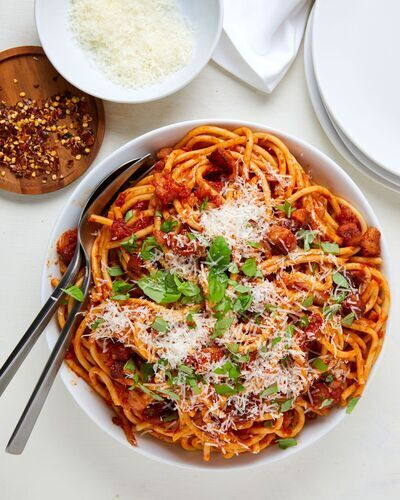

Pasta

Description
Simple, classic pasta recipes are always a crowd pleaser and naturally budget friendly.
Plus, with so many specialty-diet-friendly pastas on the market today, pasta is even more versatile than ever.
Bucatini is one of our top favorite pastas!
It's a long thin noodle just like spaghetti, but with hole through the middle.
It's extra thickness gives it a better bite and holds up to a rich tomato sauce.
Bucatini all'Amatriciana is made with pancetta and adds extra saltiness and flavor to the otherwise classic tomato sauce.
Ingredients
- Kosher salt
- 1 lb. bucatini
- 6 oz. pancetta, cut into 1/2" pieces
- 1 small yellow onion, chopped
- 3 cloves garlic, minced
- 1/2 tsp. crushed red pepper flakes, plus more to taste
- 1 (28-oz.) can crushed tomatoes
- 1 tbsp. butter
- Freshly ground black pepper
- Freshly grated Pecorino, for garnish
- Freshly chopped basil, for garnish
Steps
- In a large pot of boiling salted water, cook pasta until al dente according to package directions. Reserve ½ cup pasta water before draining.
- In another large pot over medium heat, cook pancetta until crispy, about 10 minutes. Using a slotted spoon, transfer pancetta to a paper towel–lined plate. Drain all but 2 tablespoons of fat from pot. Add onions and cook until soft, about 5 minutes. Add garlic and red pepper flakes and cook until fragrant, 1 minute more. Add tomatoes and butter. Bring to a simmer and let cook for 10 minutes. Season with salt and pepper and more red pepper flakes, if desired.
- Add cooked pasta, ¼ cup pasta water, and pancetta and toss to combine, adding more pasta water if necessary to help loosen and bind the sauce to the pasta.
- Serve topped with lots of Pecorino and fresh basil.